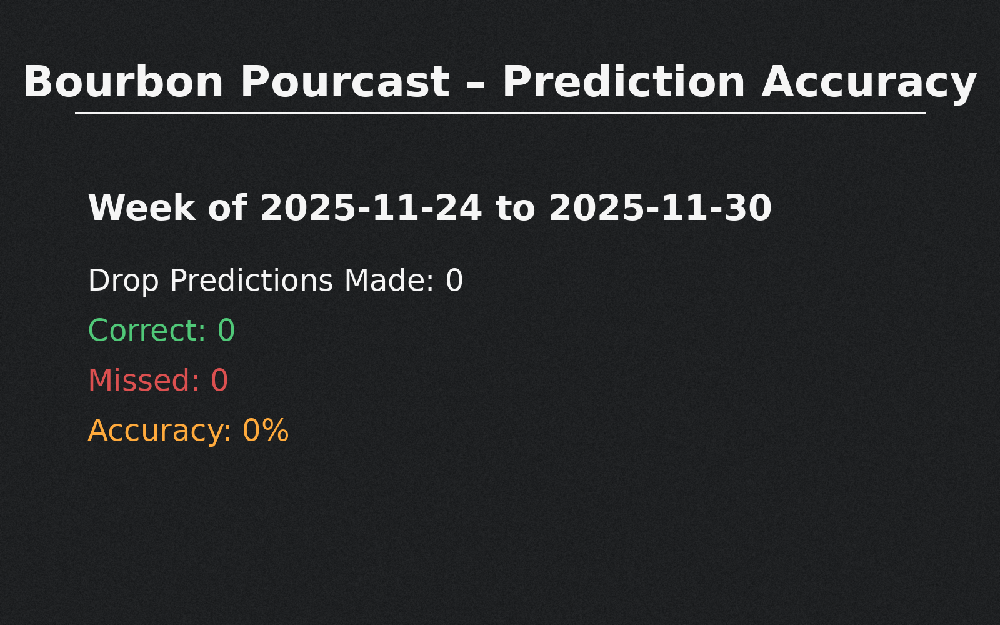

We find the good stuff for you!
Current Pourcasts
Wake County Daily Allocations Report
View Weekly Accuracy Chalkboard
Durham County Drop Alerts
How it Works
Follow us on Facebook
Weekly Accuracy — Chalkboard
✕

Close
Tip: Tap anywhere outside the chalkboard to close.